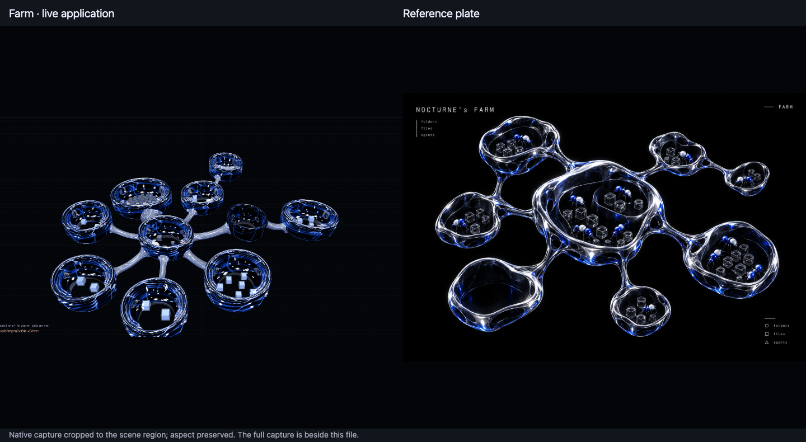
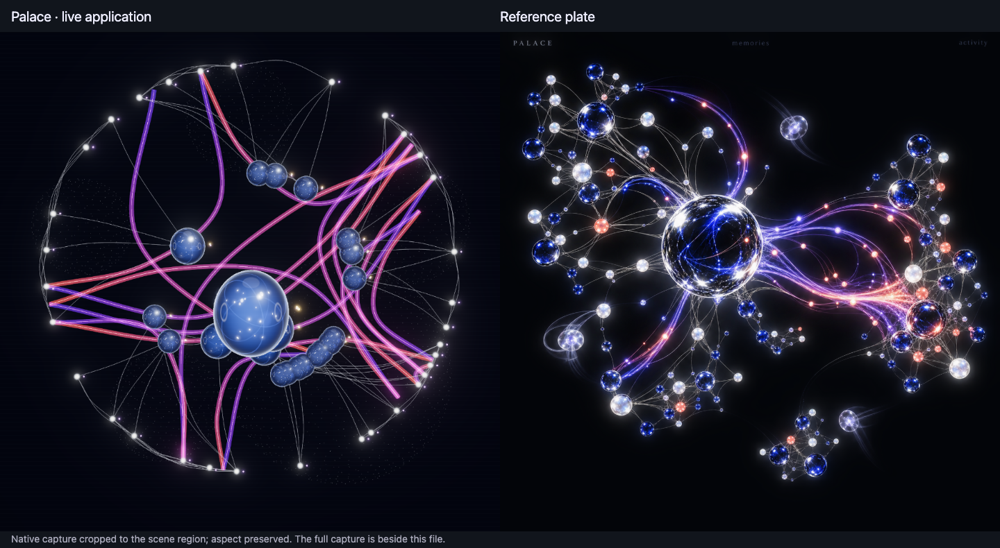
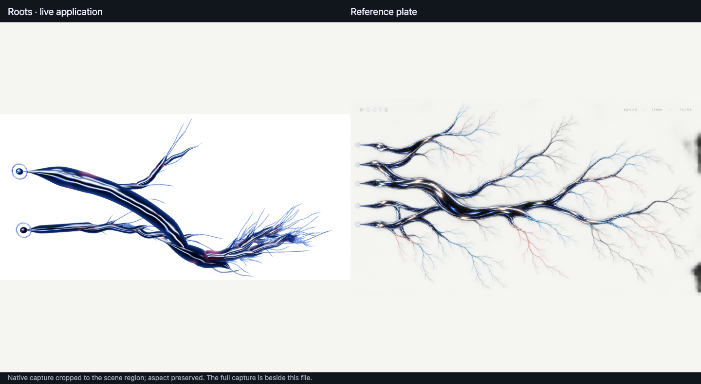

The Farm and the Palace were accepted at send-back 2 and the Roots at send-back 3 ("i like a", 2026-09-26). Each video is the running app at 2× while real work, done through the app, changes that module's data. Earlier rounds stay in fresh/, plates/, sendback2/ and sendback3/.



Also on the black stage: roots-stage-live.webm; how it was chosen: candidates-vs-plate.png.